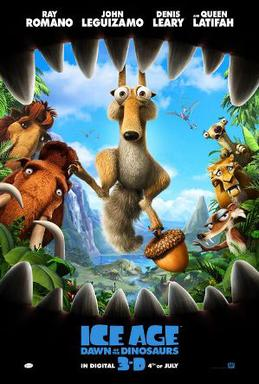
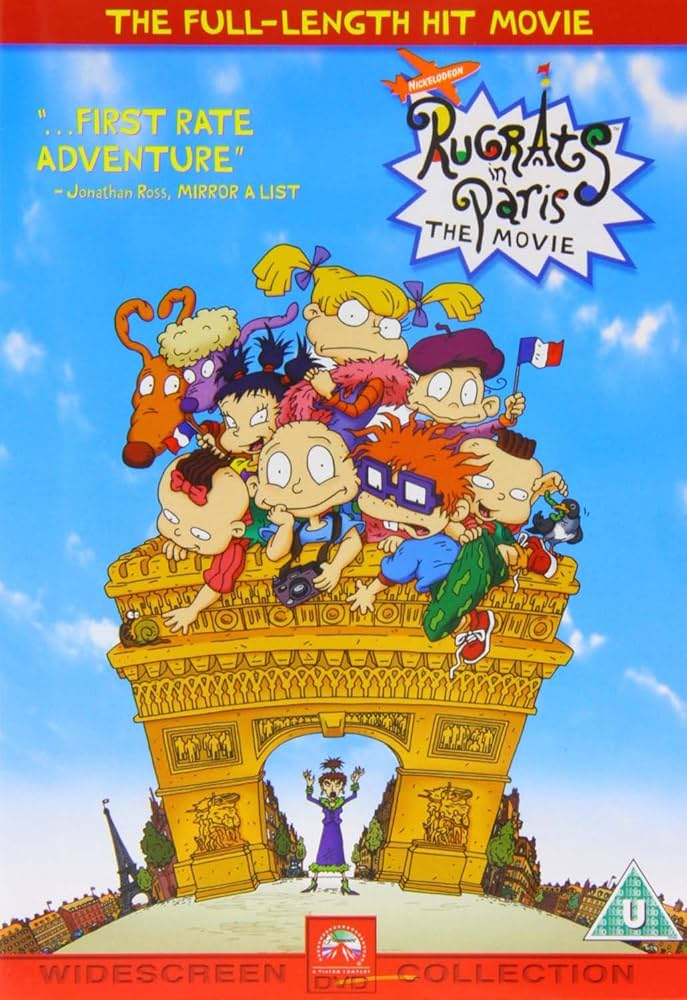
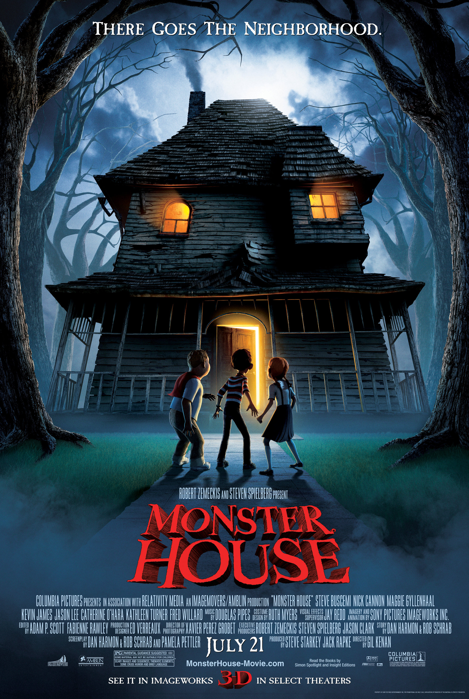
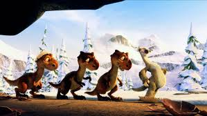
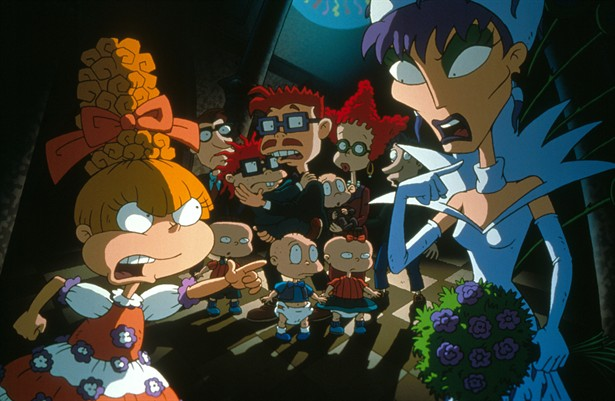
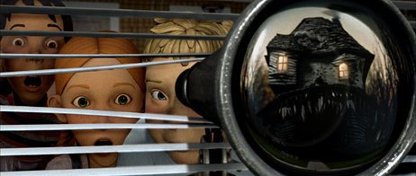

PG Run Time: 1hr 34 min Genre: Family/ Comedy

Synopsis:
After the events of "Ice Age: The Meltdown", life changes for Manny
and his friends: Scrat is still on the hunt to hold onto his beloved
acorn, while finding a possible romance with female saber-toothed
squirrel Scratte. Manny and Ellie have become an item and are
expecting a baby, which makes Manny anxious to ensure that
everything is perfect before their baby arrives. Diego is fed up
with being treated like a house-cat and ponders the notion that he
is becoming too laid-back. Sid starts to wish for a family of his
own and steals some dinosaur eggs, which lands him in a strange
underground world where his herd must rescue him while dodging
dinosaurs, facing danger left and right, and meeting a one-eyed
weasel known as Buck who hunts dinosaurs intently.
G Run Time: 1hr 18 min Genre: Family/ Comedy

Synopsis:
Wishes come true in this movie, and love makes its way into the
hearts of those young, old, and overseas. Chuckie's dad, Chaz
(Michael Bell), starts dating again, and it's Chuckie's wish to
find a new mom. When Stu Pickles (Jack Riley) is summoned to
Reptarland, an amazing new amusement park in Paris, to work on his
Reptar invention, Tommy (Elizabeth Daily), Chuckie
(Christine Cavanaugh), Angelica (Cheryl Chase), Phil (Kath Soucie),
Lil (Kath Soucie), Dil (Tara Strong), Didi (Melanie Chartoff), and
the whole gang tag along to the city of romance. But the Rugrats'
big adventure turns out to be more than glamor, fashion, and smelly
cheese. Chuckie learns that when it comes to Princesses and
potential mommies, things are not always what they seem, and for
Chaz, finding the right woman can be difficult in any language. As
the Rugrats' travels take them from the Eiffel Tower to Notre Dame
and everywhere in-between, the world's favorite babies learn new
lessons about courage, loyalty, trust, and above all, true love.
PG Run Time: 1hr 31 min Genre: Family/ Comedy

Synopsis:
13-year-old DJ is observing his neighbor Nebbercracker on the other
side of the street in the suburb that destroys tricycles of children
that trespass his lawn. When DJ's parents travel on the eve of
Halloween and the abusive babysitter Zee stays with him, he calls
his clumsy best friend Chowder to play basketball. But when the ball
falls in Nebbercracker's lawn, the old man has a heart attack, and
soon they find that the house is a monster. Later the boys rescue
the smart Jenny from the house and the trio unsuccessfully tries to
convince the babysitter, her boyfriend Bones and two police officers
that the haunted house is a monster, but nobody believes them. The
teenagers ask their video-game addicted acquaintance Skull how to
destroy the house, and they disclose its secret on the Halloween
night.